| |
Intimidator Review
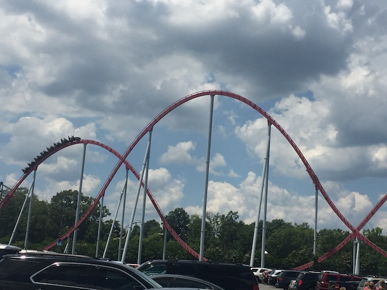
We're here at Carowinds. Today's ride we'll be reviewing for you is Intimidator. This is...one of the more intersting B&M Hyper coasters. Mainly because this ride can vary so much based on what time of day it is. I know most rides can have good days and bad days. But on Intimidator, you have good hours and bad hours. I can't think of any other ride where it varies this much. Because it can go from being one of the better B&M Hypers, up with Behemoth and Diamondback, in one hour, and then moving down among the ranks of Goliath (La Ronde) and Silver Star. So it's kind of hard to really place where Intimidator is among the ranks. But even the lower B&M Hypers are still fun rides. So at least we're guaranteed a good time. So yeah. Let's hop in the trains, pull down the clamshell restraints, and we're off! We start by climbing up the lifthill. Not much really to look at. Just the parking lot and...that's about it. Just parking lot. We're going pretty high, but when Fury is on the other side of the park, this doesn't seem quite as high. We eventually reach the top, crest the lifthill, and fall right down the first drop. Just falling straight to the ground. And we really do pick up A LOT of speed. So that's some really good news. We rise up a massive hill, get a nice pop of floater air, and then head into a curved drop back down to the ground. We gain most of our speed back, and are going pretty damn fast at this point. We then head straight into an airtime hill. Now this hill is crucial. You have to ask youself. Is the trim on on this hill? Because this will determine how the rest of the ride runs. For the sake of this review, and in the spirit of being positive, we're going to continue this review with the trim off (or at least significantly weakened). WEE!!! Airtime! We then head into this...weird sort of turnaround. It's not an overbanked turn. And it's not one of those hammerheads commonly found on B&M Hypers. It sort of just curves up to the right, and then going into a turnaround to the left, only to dip under itself back down to the ground. Hey, this thing does give a couple good laterals, and it's just an all around really fun element. Still going strong (assuming the trims are off). Yeah, there's another trim here, but if that first trim was off, then this one won't do too much damage, and we soar right over. WEE!!! Floater air. Head over another airtime hill. Rinse. Repeat. WEE!!! Floater air. We then head up a curved hill, going right into the midcourse brakes. Ahh, I never like it when these type of rides have midcourse brakes. *Sigh* It's for capacity reasons. Just keep that in mind. We head down a small drop, gaining some speed, but it's not really feeling like a hyper coaster at this point. We head up a smallish hill, leading straight into a spiral curve down to the ground. This is pretty fun. We head up another curved hill, losing a little bit of speed, only to dip back down to the ground. And hey. The hill right above does make for a good headchopper. We head up a small little hill, get a small little pop of airtime, and glide right into the brake run. Yeah. Intimidator is a really good ride. Even when its trimmed and running slow and sluggish, it's still a fun ride and one of the better rides at Carowinds. Yeah. Of course it's better when it runs without trims and at its full potential. But even so, it's worth a ride when visiting Carowinds. Yes, even with Fury 325 next door.
8/10
Location: Carowinds
Opened: 2010
Built by: B&M
Last Ridden: July 25
Intimidator Photos
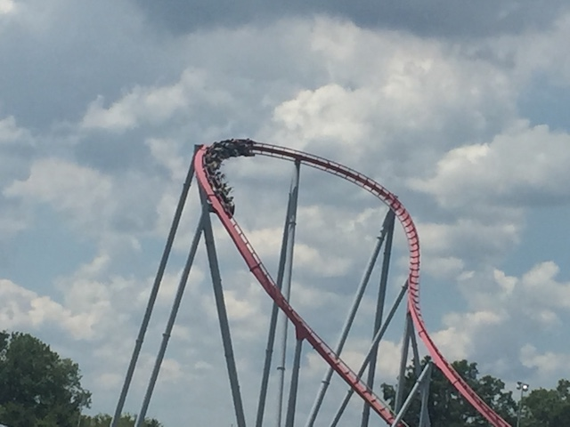
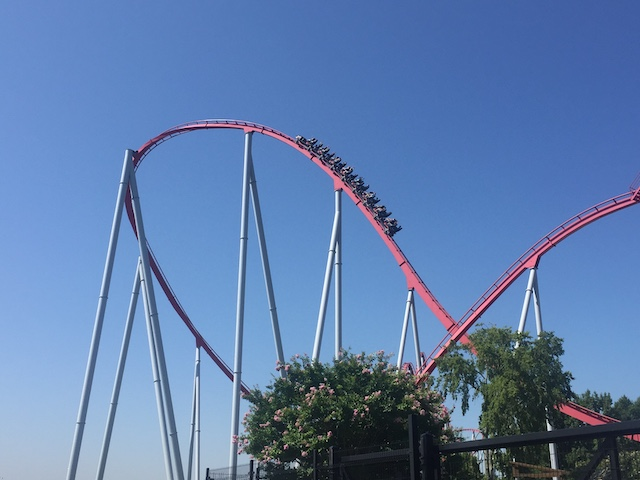
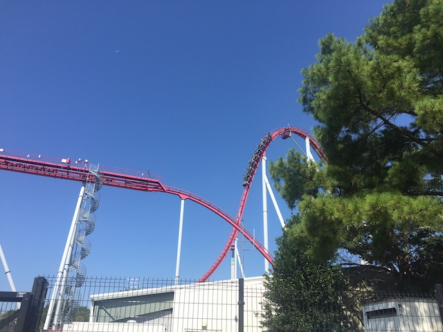

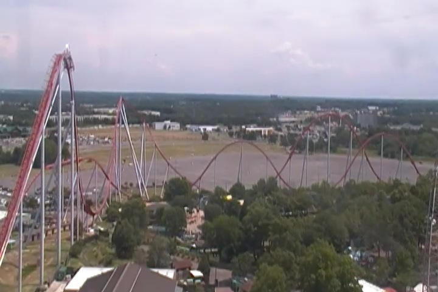
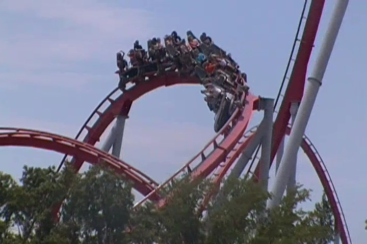
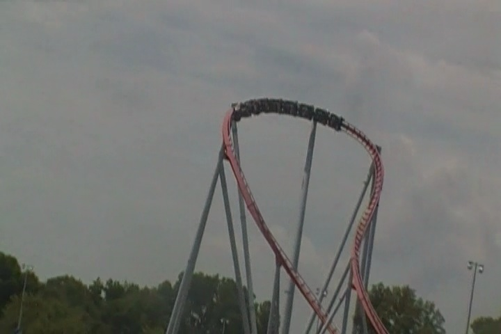
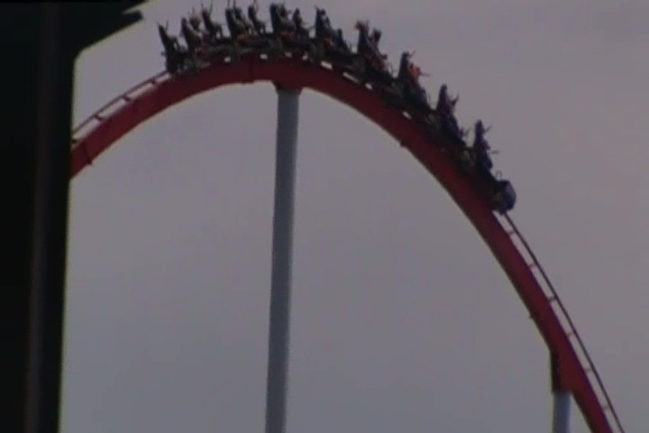
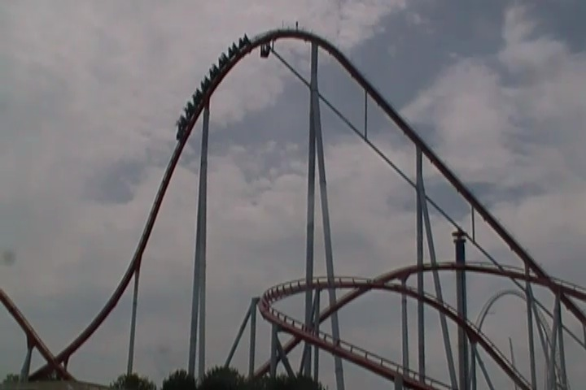
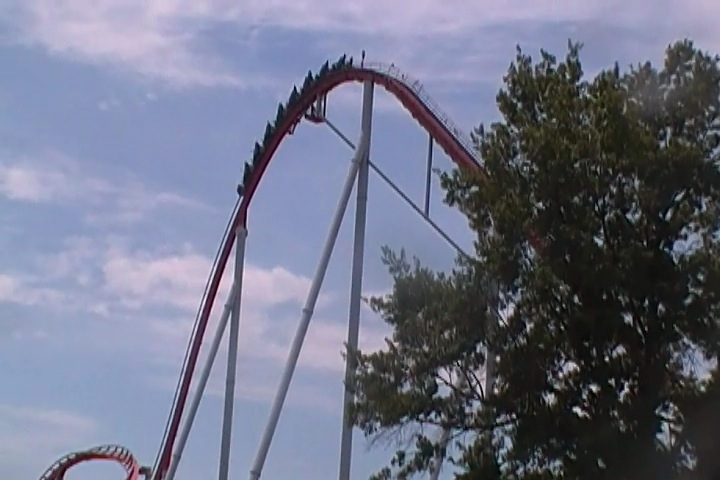
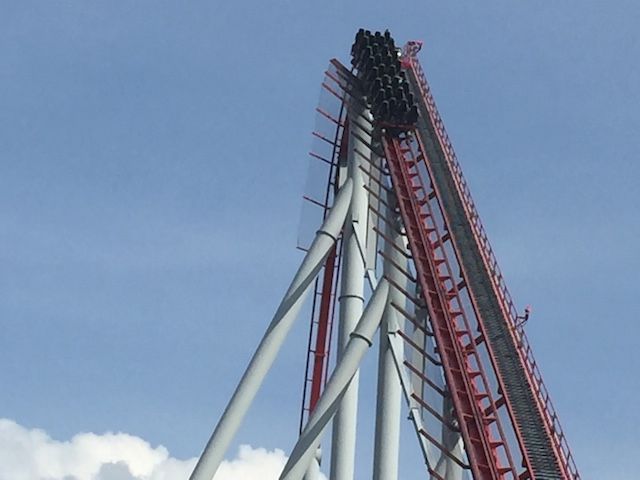
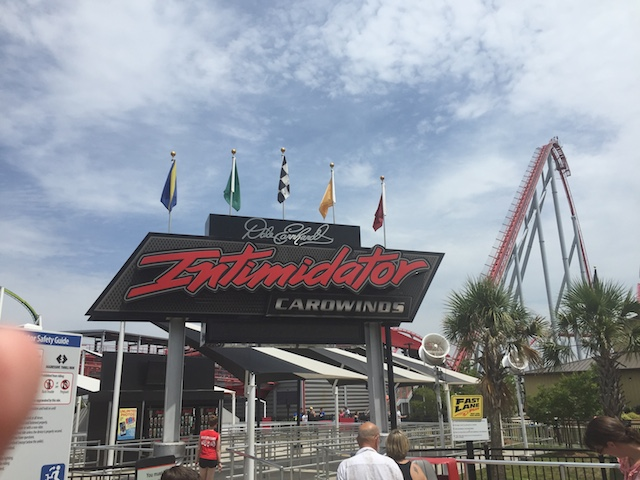
Home
|